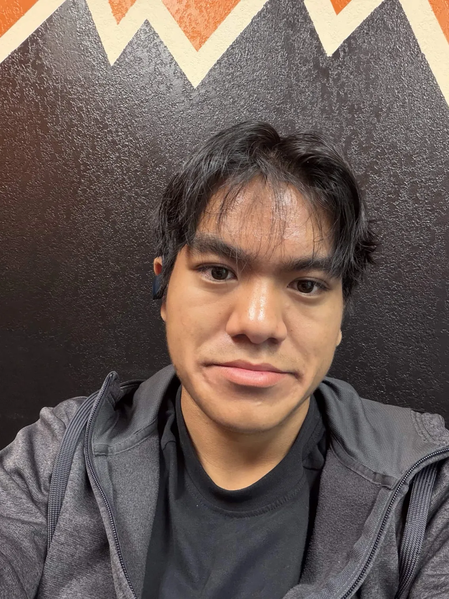

01 / 0 ms
Encounter
The face consumes the screen. A human-scale figure and narrow structural rails establish impossible scale. The mouth itself is the accessible entrance.
Preproduction / isolated from the V2 app
A six-shot storyboard for an original, monumental guardian and a human-operated neural control center. The artwork below is a vector construction study: it proves the jaw mechanics and framing, not final production illustration.
Mechanics proof
The upper face, stationary mouth cavity, lower jaw, hinge sockets, and telescoping side linkages are separate SVG artwork groups. The chin travels 104 art units and foreshortens as it pitches open; the linkages stay connected. The opening is visible without a circular mask.
Fallback: if custom painted layers later fail to align at mobile crop, retain this SVG proof as the mechanical guide while art is revised. Do not revert to an iris portal.
Sequence / 2–3 seconds to the Inner Core
The face consumes the screen. A human-scale figure and narrow structural rails establish impossible scale. The mouth itself is the accessible entrance.
The amber eyes tighten; cheek conduits answer in cyan. The mouth seam separates by a few pixels while the conventional navigation stays still.
The jaw descends from two visible hinge sockets. Upper teeth remain fixed, lower teeth travel with the chin, and the stationary cavity appears between them.
With the jaw fully open, the camera advances along the cavity's dark perspective rails. The exterior drops out through depth and occlusion.

Brandon / source portraitBrandon stands at a real control desk, lit by amber monitors. The room is a neural workshop: cables, connection paths, physical panels, and restrained annotations.
Selection lights one route from Brandon to a project node. A semantic HTML panel opens with verified summary and links; other routes remain available.
Responsive composition study
The guardian fills the width; the mouth remains within thumb reach.
Enter through the mouth ↓The operator remains central. A selected connection opens a readable panel below the scene.
SecureAgent Lab →Mobile navigation stays conventional; connected nodes become a stacked list below the illustrated operator. The jaw remains the same art assembly at both sizes, with a tighter crop and shorter camera move.